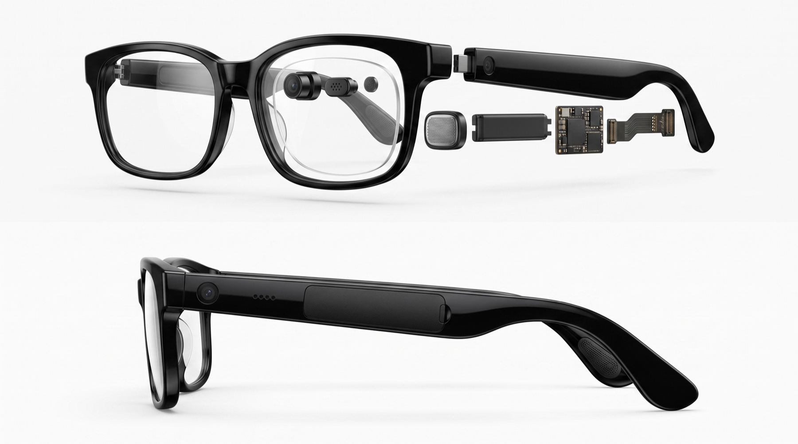
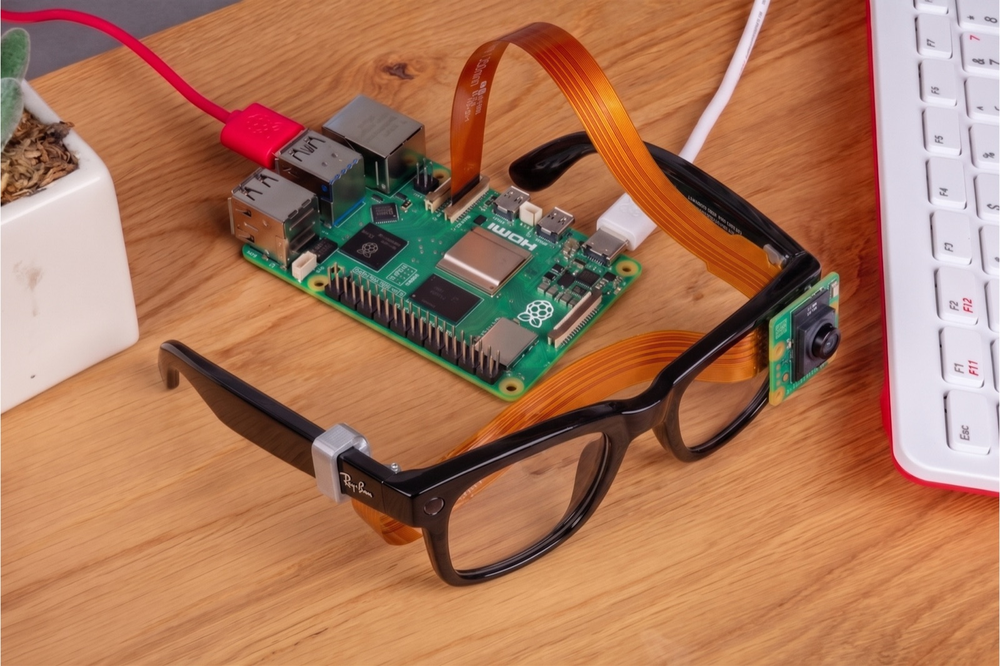

01
It begins as a familiar pair of glasses.
No complicated interface to learn. Jericho is designed around something already understood and worn every day.
Built for the Age Well generation
Jericho is a visual and voice companion designed to help older adults understand, remember, and navigate everyday life—with reassurance for the people who care for them.
01 / Why Jericho
As everyday tasks become harder to see, remember, or navigate, older adults often have to choose between asking for help and doing without it.
Jericho places gentle assistance where it is easiest to reach: in sight, by voice, and in the moment it is needed.
02 / Inside Jericho

01
No complicated interface to learn. Jericho is designed around something already understood and worn every day.
02
Vision understands the scene. Memory keeps useful context. Voice makes help available without reaching for a phone.
03
The components return to a simple form—present when needed and out of the way when they are not.
04
The wearer stays in control. Family and caretakers remain part of the picture, even when they cannot be in the same room.
03 / Working prototype
Our proof of concept combines a glasses-mounted camera with Raspberry Pi computing and the Jericho software stack. It validates the core interaction today while pointing toward a smaller, lighter product tomorrow.

Raspberry Pi compute Camera module Camera connection Prototype mountToday
Next
04 / Everyday support
Jericho is designed around the questions that come up in ordinary life—not around technology for its own sake.
Point toward an object or medicine and receive a clear spoken description based on what the camera sees.
“What is this?”Remember where everyday objects were last seen, with location, time, and visual context.
“Where are my keys?”Read letters, labels, bills, dates, and small print aloud in simple, understandable language.
“Can you read this?”Speak naturally and receive patient voice guidance without navigating menus or staring at a screen.
“Can you help me?”Prototype evidence
Persistent object tracking and context awareness across a room walkthrough.
For the wearer
For families and caretakers
05 / Trust by design
Jericho should give the wearer meaningful control over what is seen, remembered, and shared.
Jericho is a daily living aid. It does not diagnose conditions, guarantee safety, or replace professional care.
Working capabilities and future roadmap features remain clearly separated throughout the experience.
Project Jericho
We are developing Jericho with older adults, families, and the realities of care in mind.